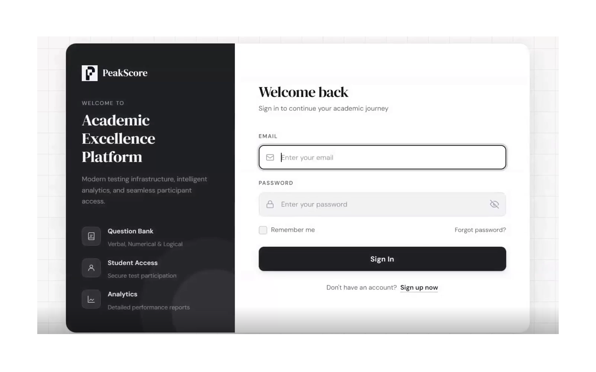
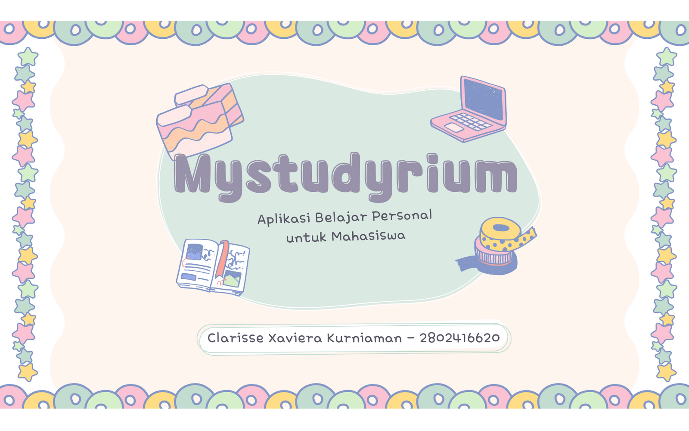
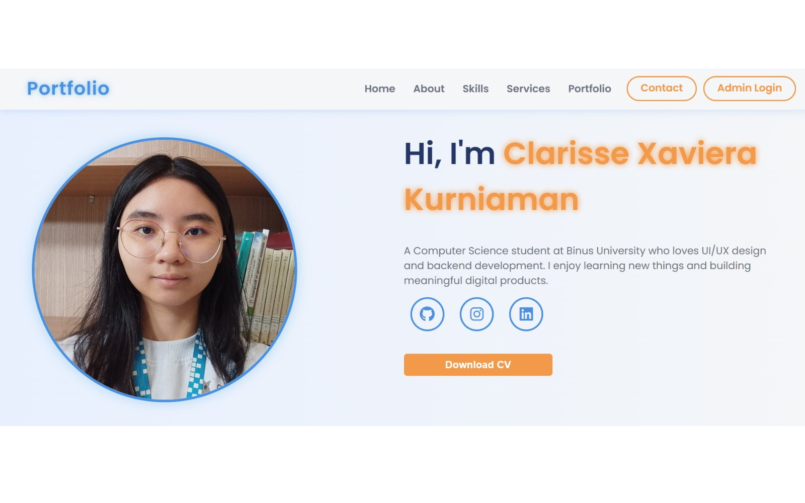
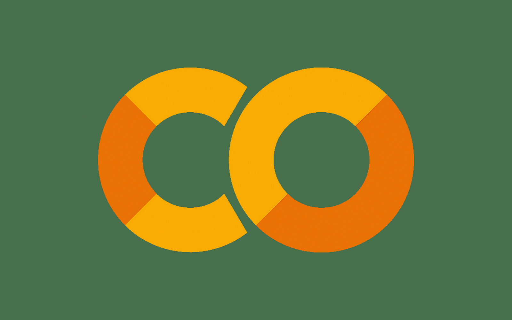
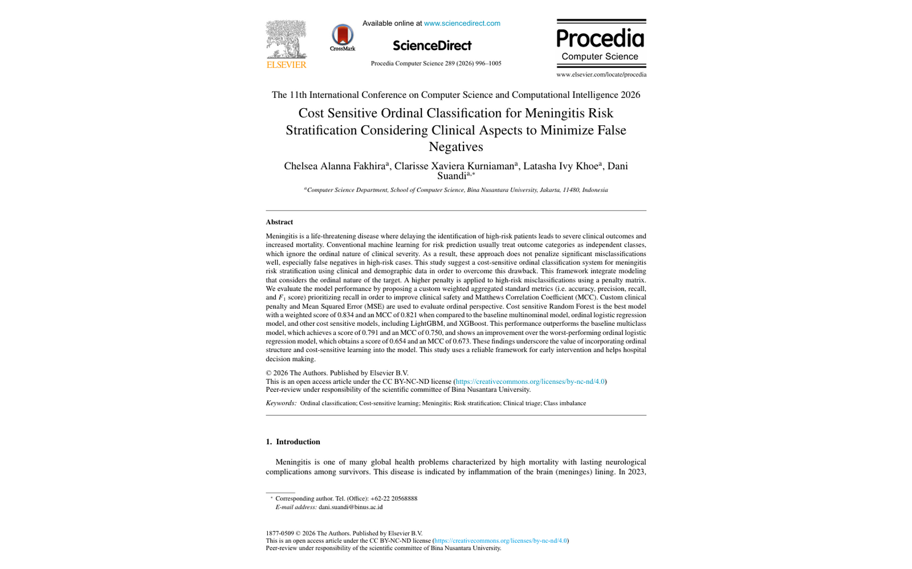
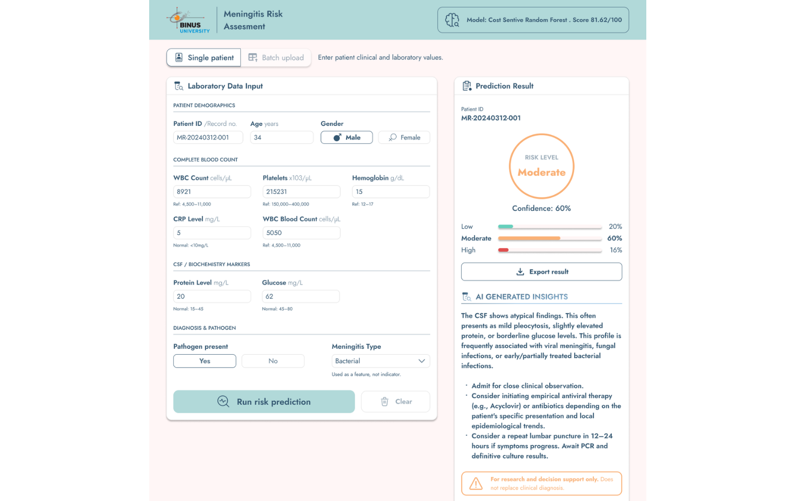
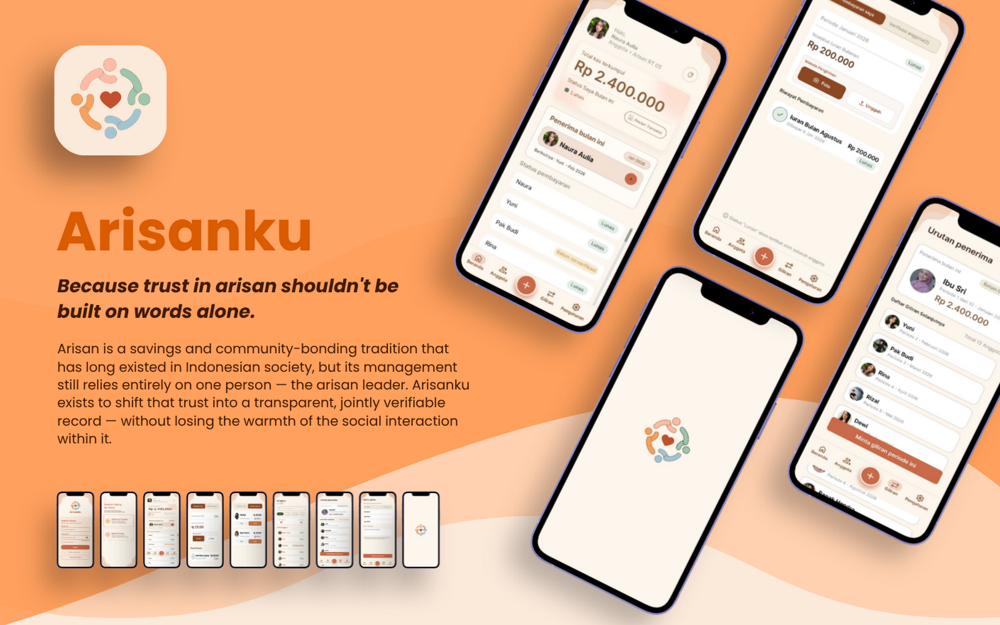
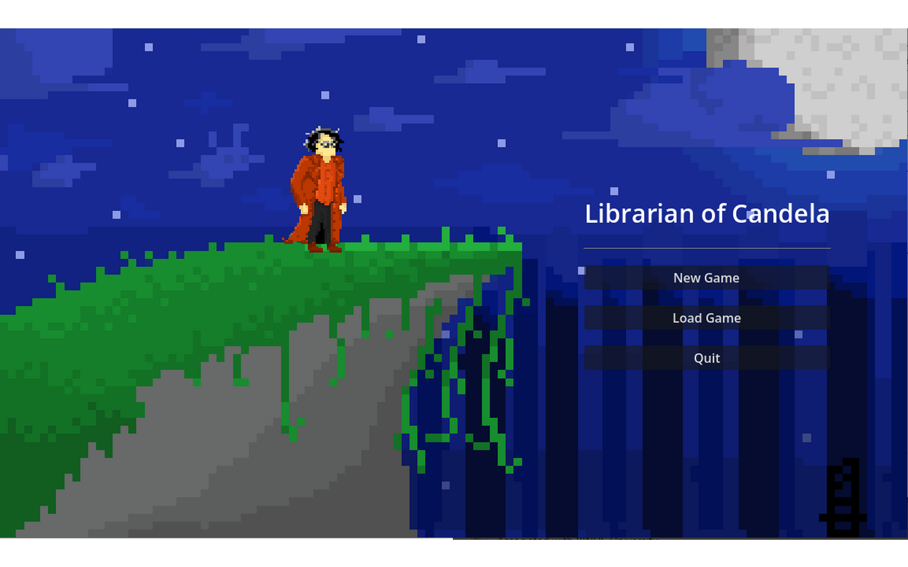

Programming
- Python
- JavaScript
- PHP
- SQL
- Go (basic)
Computer Science Student · BINUS University
Full-Stack Developer & Applied ML Researcher
Interested in full-stack development, applied machine learning, and user-centered design. I build web applications and co-authored published research on clinical risk prediction.
About me
I'm a Computer Science student at BINUS University in Bandung and an active member of the Bina Nusantara Computer Club (BNCC). My work spans full-stack web development, applied machine learning research, and UI/UX design, and I care about how they support each other: good software starts with understanding the people and the data behind it.
Skills
Selected work

Custom full-stack web applications, including an e-commerce platform and a bookstore management system, built for responsive, user-centric experiences with a structured back end and database-driven data handling.
My contribution: designed the front-end interfaces and back-end structure, integrated databases and RESTful API logic, and implemented user authentication, product catalog filtering, state management, and cart operations.

A fantasy-themed learning app that helps university students build better study habits, with a Pomodoro focus timer, digital notes, flashcards, an AI study assistant, and a gamified progress tracker. Created through the Bina Nusantara Computer Club (BNCC).
My contribution: the full UX process, end to end: user survey, persona, empathy map and journey map, user flows, card sorting, information architecture, high-fidelity Figma prototypes, and usability testing. Testers valued clean layout over decoration, which reshaped my roadmap.

A content management system with a login-protected admin panel to add, edit, and delete portfolio entries, plus a contact form that saves messages to a database. My first PHP portfolio, before I moved to a static site.
My contribution: built the authentication flow, CRUD operations, and database schema. Runs locally and is not hosted.

An exploratory analysis of cardiovascular health datasets for GDGoC BINUS Bandung, aimed at identifying the key clinical risk factors for heart disease.
My contribution: end-to-end data preprocessing, statistical hypothesis testing (Shapiro-Wilk), and correlation mapping (Pearson/Spearman), then data visualizations that turn the findings into clear clinical insights.

Traditional classifiers treat patient risk levels as unordered categories and penalize every error equally. We compared baseline models against cost-sensitive ensembles (Random Forest, LightGBM, XGBoost) to reduce high-risk false negatives. Published in Procedia Computer Science (Elsevier).
My contribution: co-author on a 3-person team. I researched and wrote the introduction, co-wrote the methodology, and helped interpret SHAP results showing which biomarkers drove each risk tier. Modeling was led by teammates.

Built for a Software Engineering course as the applied follow-up to our meningitis research paper: the analysis from Research Methods was carried forward into a web-based Clinical Decision Support System that helps clinicians triage meningitis risk in emergency settings. It pairs a Flask back end and a cost-sensitive Random Forest with the Google Gemini API for clinical summaries, under strict data-minimization standards.
My contribution: co-author. I focused on the investigation and formal analysis phases: evaluating the single-patient and bulk workflows and validating that the asymmetric penalty matrix minimized high-risk false negatives.

A digital arisan concept for the Electrical Engineering in Action (EEA 2026) UI/UX Design Competition, tackling trust issues, social friction, and lack of transparency in community savings with private payment reminders, non-judgmental status indicators, and automated receipt verification.
My contribution: Research & Narrative Lead. Defined the problem statements, personas, empathy maps, and Jobs-to-be-Done frameworks, and wrote the main design proposal and presentation script. Also shaped the UX strategy and took session notes to analyze feedback. Teammates led the visual UI and usability sessions.

A 2D narrative-driven side-scroller created for COMPFEST 18 / Indie Game Ignite by Team RLC Circuit, built in about three and a half weeks with a six-chapter story set across a five-floor mansion.
My contribution: collaborated on core gameplay mechanics, level progression, and branching narrative choices; created pixel-art visual assets; and helped run playtests, balance the game, and refine HUD responsiveness.
Background
BINUS University, Bandung · Expected 2028
Coursework in data structures, algorithms, web development, and machine learning fundamentals.
Published in Procedia Computer Science (Elsevier) · 2026
"Cost-Sensitive Ordinal Classification for Meningitis Risk Stratification," a 3-person paper. I researched and wrote the introduction, co-wrote the methodology, and helped interpret SHAP results across risk tiers. Read the paper
ICCSCI (International Conference on Computer Science and Computational Intelligence) · Issued June 2026
Awarded for presenting the paper above at the 11th ICCSCI.
GDGoC BINUS University Bandung · Issued December 2025
Completed a 2-day workshop; the Heart Disease analysis was the final project.
Bandung · Jul 2024 – Present
One-on-one tutoring for around 10 students in critical thinking, structured problem-solving, and academic writing.
BINUS University · Jan – Jun 2026
Independently mentored BINUS juniors in CS fundamentals across 9–10 one-on-one sessions.
2026
Research & Narrative Lead for Arisanku (EEA 2026 UI/UX Competition, Team CloVer) and game contributor for Librarian of Candela (Indie Game Ignite, Team RLC Circuit).
Bina Nusantara Computer Club
UI/UX and back-end learning projects, including the Mystudyrium case study.
Contact
I'm looking for internship and entry-level opportunities in software engineering. Email is the fastest way to reach me.
Send an email